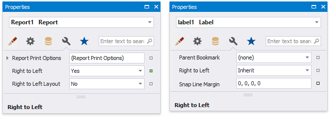
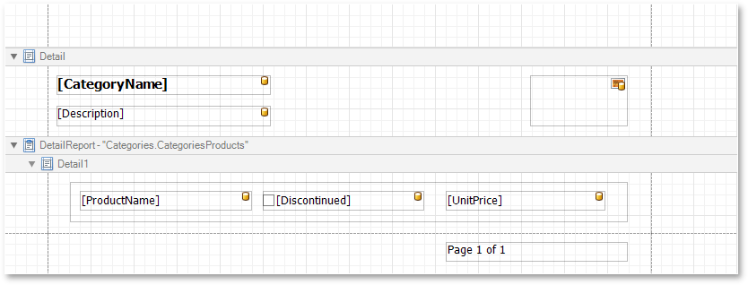
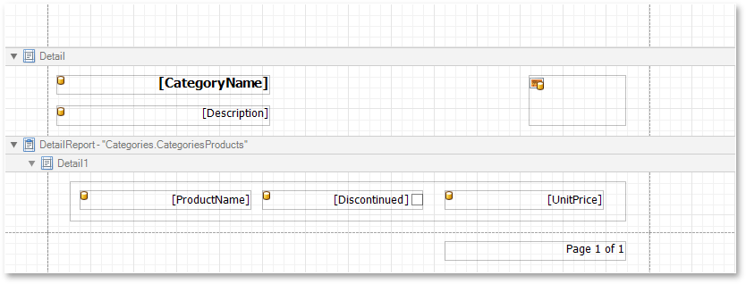
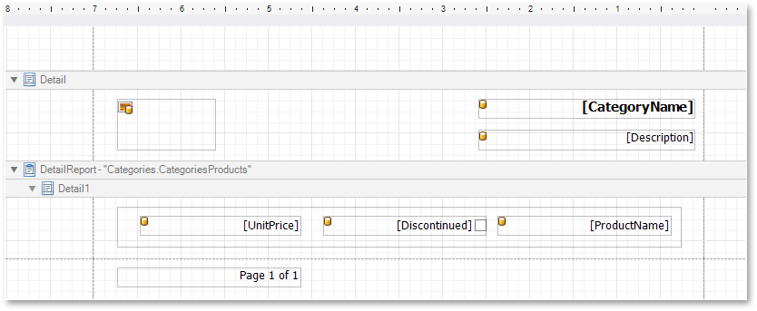

Enable the Right-To-Left Layout
The report and most of the report controls provide the Right to Left property.

This property specifies content layout within a control (for most controls, this property affects the direction of their text, and for the Check Box, this property also affects the check box position within the control).
Left-To-Right

Right-To-Left

By default, all report controls have this property set to Inherit, so enabling it for a report will apply this setting to all its controls.
The following controls support this feature:
For the Panel and Table, this option only affects the controls contained in them.
When the Right to Left property of a report is set to Yes, you can also enable the Right To Left Layout property that specifies the position of controls within report bands. Enabling the right-to-left layout will also swap the page margins of a document (it will become impossible to place controls outside the right page margin).

The controls' coordinates will remain unchanged and only the point and direction of reference will change (the X coordinate will be calculated starting with the top right corner).
The right-to-left layout is preserved when exporting a report to any of the supported formats (e.g., PDF, Excel, or RTF).